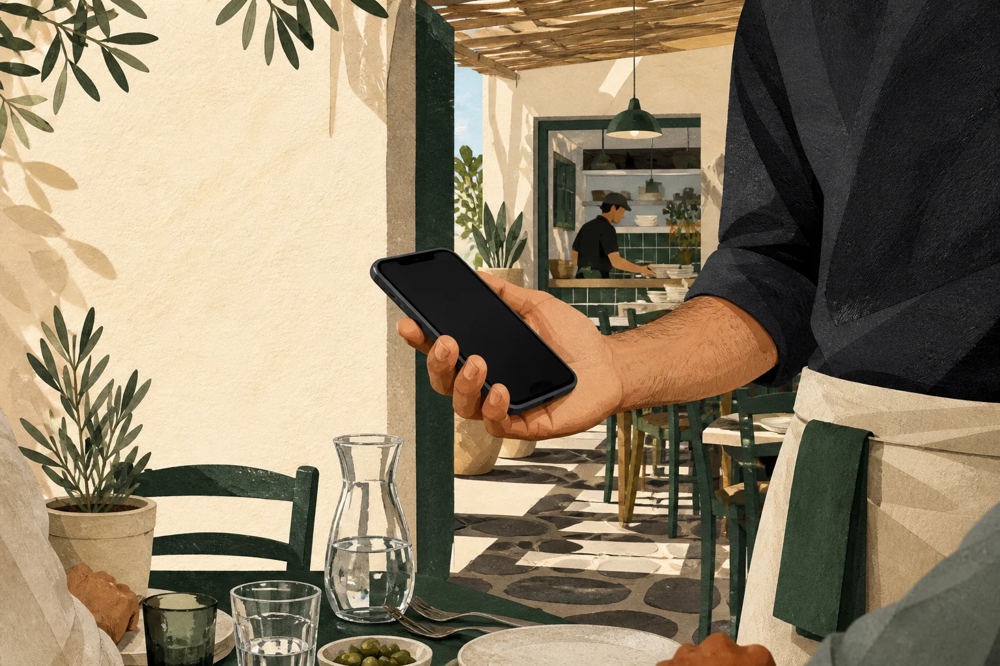

Οδηγός παραγγελιοληψίας
PDA τι είναι στην εστίαση;
Η φορητή συσκευή του σερβιτόρου είναι μόνο η αρχή. Πίσω της υπάρχει πρόγραμμα, υπολογιστής, δίκτυο και κουζίνα.

PDA σημαίνει Personal Digital Assistant. Στην εστίαση, όμως, όταν κάποιος λέει «PDA» συνήθως εννοεί τη φορητή συσκευή από την οποία ο σερβιτόρος καταχωρίζει και στέλνει την παραγγελία.
Η συσκευή δεν είναι όλο το σύστημα. Είναι το σημείο όπου αρχίζει η παραγγελία.
Ο εξοπλισμός
Τι υπάρχει πραγματικά πίσω από το PDA

- Κινητό ή tabletΑνοίγει την παραγγελιοληψία από πρόγραμμα περιήγησης.
- Υπολογιστής WindowsΕδώ τρέχει το POSPal.
- Τοπικό δίκτυοΠρέπει να επιτρέπει στις συσκευές να επικοινωνούν.
- Ειδικό PDAΧρήσιμο όταν υπάρχει πραγματικός λόγος για ειδικό εξοπλισμό.
- Θερμικός εκτυπωτήςΠροαιρετικός και πάντα με πραγματική δοκιμαστική εκτύπωση.
Ειδικό PDA ή ένα κατάλληλο κινητό;
Η σωστή απάντηση εξαρτάται από τη βάρδια, όχι από το πόσο εντυπωσιακό δείχνει ο εξοπλισμός.
Το ειδικό PDA έχει νόημα όταν
ο χώρος και η χρήση απαιτούν συσκευή που αγοράστηκε ειδικά για τη δουλειά. Τα πραγματικά κριτήρια θα μπουν εδώ με τη γνώμη του Robert.
Το κινητό ή tablet αρκεί όταν
μπορεί να ανοίξει το πρόγραμμα περιήγησης και να φτάσει τον υπολογιστή Windows μέσα από το προσβάσιμο τοπικό δίκτυο.
Δεν πουλάμε PDA. Δεν χρεώνουμε ανά PDA. Το κινητό της ομάδας σου μπορεί να γίνει PDA.
Μία παραγγελία
Από το χέρι του σερβιτόρου μέχρι την κουζίνα
Η συσκευή πρέπει να μπορεί να φτάσει τον υπολογιστή. Το ίδιο όνομα Wi-Fi δεν αρκεί πάντα.

Η κουζίνα είναι το επόμενο σημείο. Η τελική εικόνα θα αντικατασταθεί όταν υπάρχει πραγματικό στιγμιότυπο κουζίνας ή αυθεντικό εκτυπωμένο δελτίο.
Αυτή είναι η ροή παραγγελιοληψίας και κουζίνας. Η ταμειακή και το φορολογικό POS παραμένουν ξεχωριστά.
Δύο λεπτομέρειες που φαίνονται μικρές μέχρι να αρχίσει η βάρδια
Η απομόνωση επισκεπτών ή άλλοι περιορισμοί μπορεί να εμποδίζουν τη συσκευή να φτάσει τον υπολογιστή.
Ο εκτυπωτής χρειάζεται πραγματική δοκιμαστική εκτύπωση πριν βασιστεί πάνω του η κουζίνα.